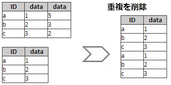

複数のワークシートがあり、列ラベル行を照合してそれらをワークシートに結合する場合は、ワークシートをラベルで結合するツールを使用できます。
ワークブックウィンドウをアクティブにしてこのツールを開くには、
または
wjoinbylabel -d;を実行します。
これでX-Functionのwjoinbylabelが開きます。
再計算モードを指定します。
統合したい入力ワークシートを選択します。表示ボックスとツールバーで入力ワークシートを選択する方法の詳細を参照してください。
ロングネーム、単位、コメントなどを含む、ワークシートを結合するための一致するラベル行条件を指定します。
ラベル行が一致する最初の列を残し、他の列を削除するかどうかを指定します。

ラベル行が一致する列のすべての組み合わせを表示するかどうかを指定します。
ソースワークシートを識別するため結果シートに「ソース」というロングネームの列を追加するかどうかを指定します。
1:1は、ソースワークシートを1,2,3、..として識別します。統合されたデータ列の前にデータ識別子列を挿入するには、このチェックボックスを選択します。選択しない場合、識別子列は最後に追加されます。
出力ワークシートを指定します。